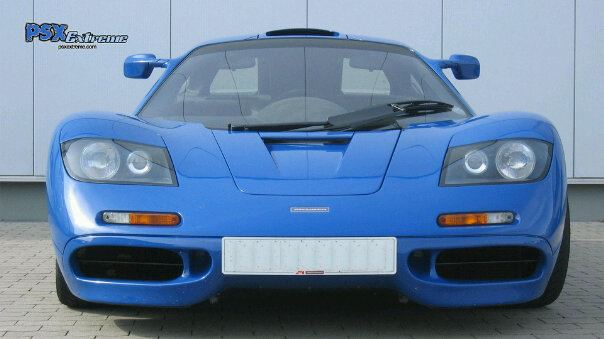

Amien Abrahams
Instructional Designer from Cape Town.
Get in touch: amien.a86@gmail.com

Welcome to my small website. Not much here yet. Lots of ideas, just need to make the time to build it out.
Some of my interests can be explored by clicking on the links below:
NERA Training
One of my favourite tunes